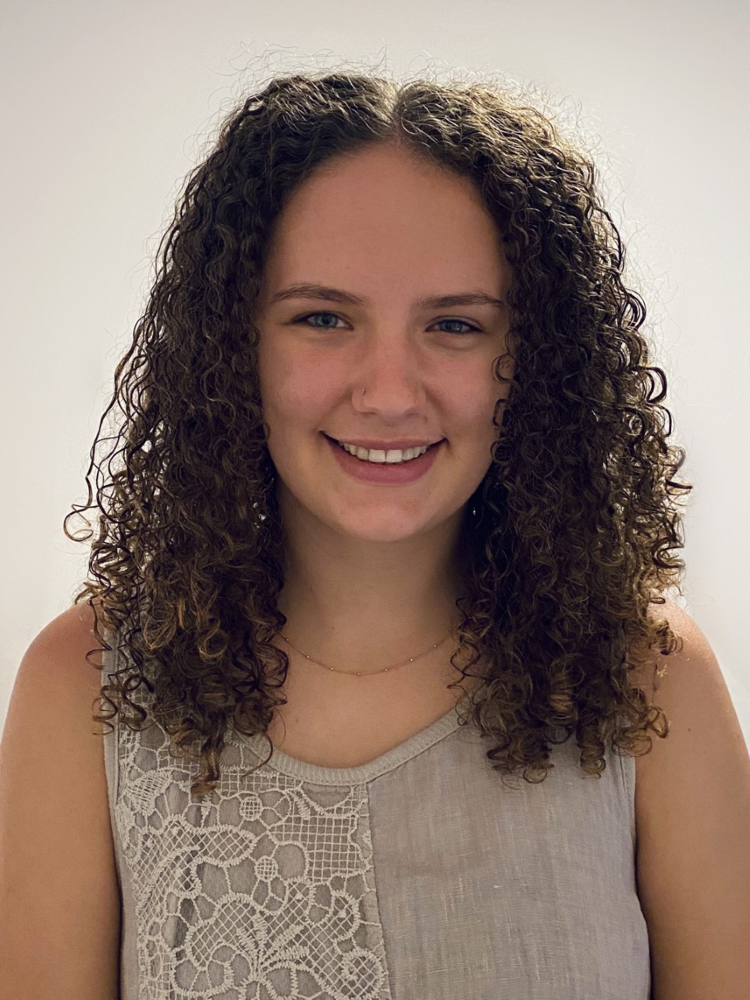

EXPLORE TECH
For 7th - 10th grade girls
This program gives our participants the opportunity to investigate specific topics in depth. Participants can choose one or both offerings, to meet four or eight times per semester on School of Mines campus. **Due to COVID-19 our spring 2021 program will be virtual. See details below.

- Time: 4:30-6:00pm
- Day(s): Offered Monday, Wednesday, Thursday (choose ONE day of the week)
- Location: Virtual session via Zoom
- Cost: $60 per program, or, $110 for both Python for Beginners and Python Next Level
2021 Spring Session
Girls can join us for exploration in EITHER Python for Beginners or Python Next Level, or BOTH!
Python for Beginners
Prerequisite: none
Course Description: Participants will design, develop, test, troubleshoot, and present their own game of Hangman in this Python for Beginners session! DECtech instructors will lead small Zoom lessons during which participants will be introduced to beginning Python skills (data types, conditionals, and looping) and then have the opportunity to apply their new skills by developing short programs throughout the session.
-
7th/8th Grade (choose ONE day of the week):
- MONDAY: January 25, February 1, February 8, February 22
- THURSDAY: January 28, February 4, February 11, February 25
-
9th/10th Grade:
- WEDNESDAY: January 27, February 3, February 10, February 24
Python Next Level
Prerequisite: Python for Beginners or programming experience with a text-based language
Course Description: This session will continue where the first session left off. In this session, participants will design, develop, test, troubleshoot and present their own adventure story game! DECtech instructors will lead small Zoom lessons during which participants will learn how to read from and write to files using Python and create their own functions. Throughout the session, students will develop short programs as they’re learning new skills.
-
7th/8th Grade (choose ONE day of the week):
- MONDAY: March 1, March 8, March 15, March 22
- THURSDAY: March 4, March 11, March 18, March 25
-
9th/10th Grade:
- WEDNESDAY: March 3, March 10, March 17, March 24
Course Instructors:

Hello, I'm Grace! I'm originally from Austin, and in my free time you can find me backpacking, reading, or hopefully swimming in a lake. I'm a junior, and this is my third semester working with DECtech. I'm a Computer Science major, and I love teaching and being around kids. I've previously helped with a Robotics course and an app development course for DECtech. I also helped with a ton of virtual STEM camps we held over the summer!
Have questions? Please visit our FAQ page and find answers to popular questions.
Need more information? Please email us at stem-tech@mines.edu.
Thanks to our sponsors, financial scholarships available for those participating in their free/reduced lunch program, and those experiencing economic hardship due to COVID-19. Please email stem-tech@mines.edu for information on how to apply.